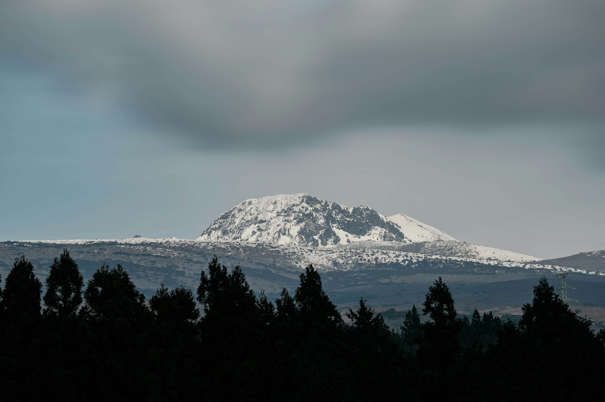
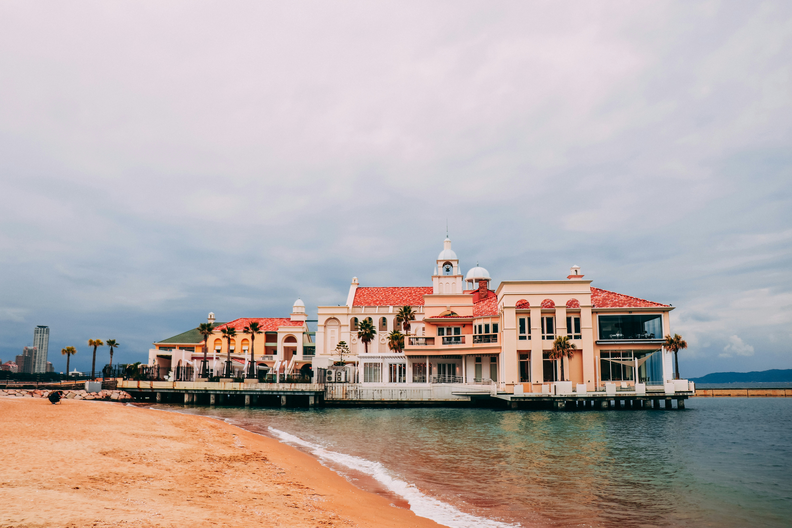

Travel Album
소중한 여행의 순간들을 기록한 여행 앨범입니다.
앨범 구경을 완료한 후 각 앨범카드를 클릭해보세요!
VISITED
01
제주도

제주도의 넓고 푸른 풍경과 맑은 바다 그리고
맛있는 음식까지 최고의 여행지입니다.
VISITED
02
후쿠오카

모모치해변은 계절 상관없이 언제나 예쁩니다.
일본 감성과 바다 풍경이 정말 인상 깊었습니다.
VISITED
03
서울

서울은 볼거리가 많아서 하루가 금방 지나갑니다.
카페와 야경이 특히 기억에 남았습니다.